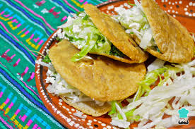

Ingredientes
- 500 g de masa de maíz
- Sal al gusto
- Relleno de frijoles, queso o chicharrón
Preparación
Forma bolitas con la masa, aplánalas y cocínalas en el comal. Cuando estén infladas, ábrelas y rellénalas con tu guiso favorito.
lo mejor
un plato muy comun en muchos lugares de mexico y que por ende es muy popular